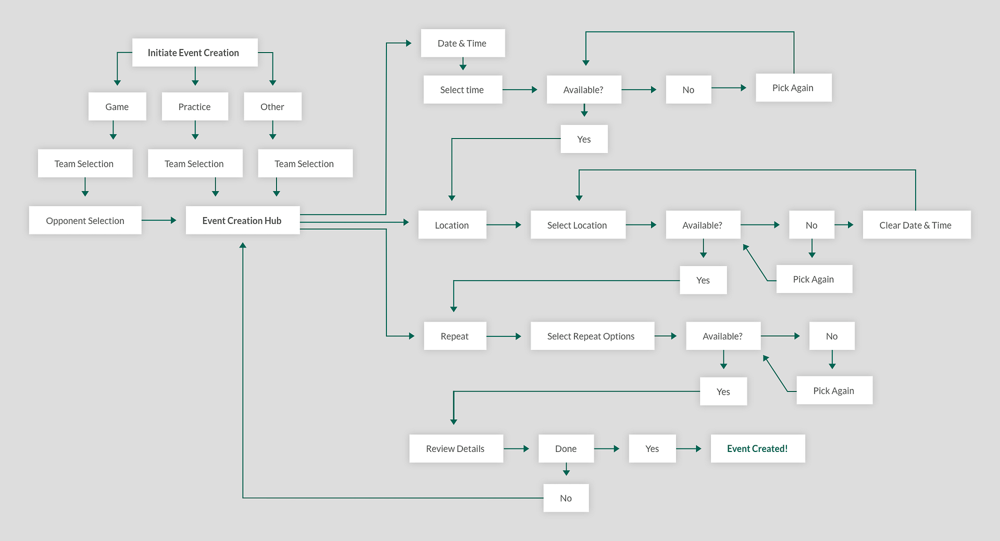
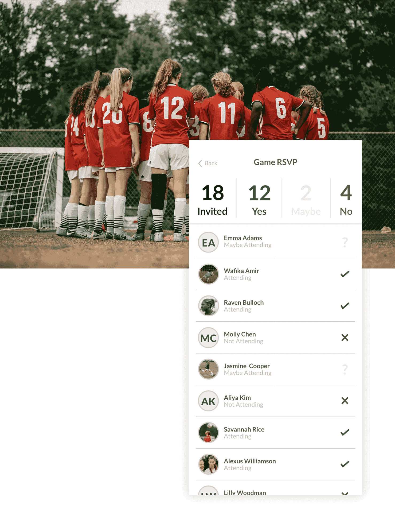
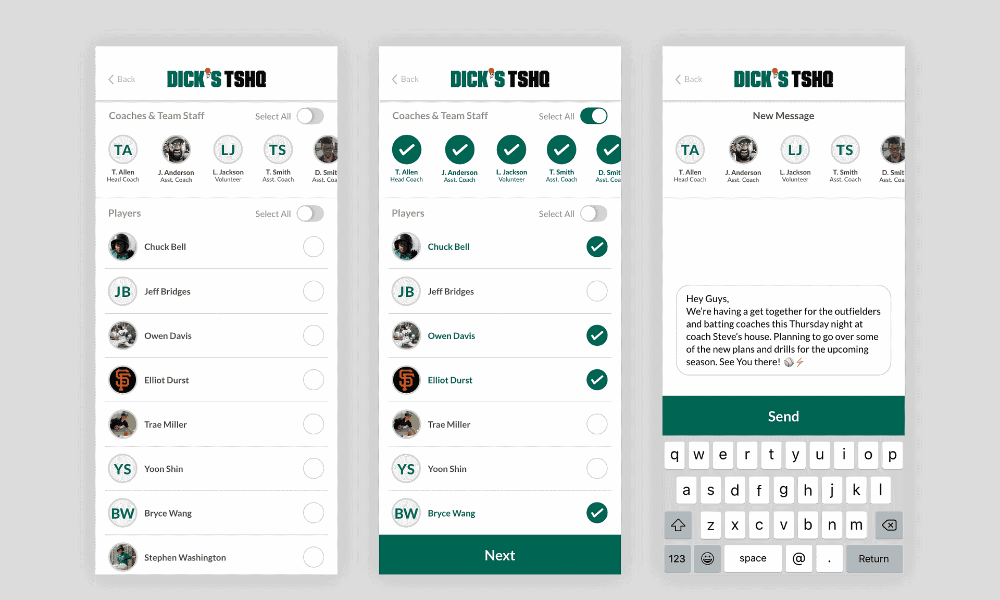

DICK'S TSHQ Mobile App
The DICK'S Team Sports Headquarters mobile app is a way for busy parents and coaches to ease the pain of youth sports logistics on the go, and to extend the excitement past the playing field.
I worked as the lead product designer for the project, alongside the mobile development team and the mobile product manager, and was tasked with creating new features for our already established app.
Research
After conducting user interviews and surveys with parents, coaches, administrators, and league officials, who were all current users of the app, we got a better sense of how and what they were currently using the app for. I gathered as much information from them to understand the challenges they face and how to minimize their frustrations.
Parsing the research data, the users biggest challenges and pain points when using the app were:
1. Not having a way to schedule a new event easily.
2. Being unable to track which players were going to show up for a given practice or game.
3. Not being able to quickly message the entire team with a change or update to the schedule.
Personas were created to help place a face to our users.
Based off the findings from our research, we saw an opportunity to integrate new functionality that the product initially was missing. The team finalized a plan of action that targeted all of the core problem areas we wanted to solve.
Custom Events
With custom events, users can create games or practices for their team. The true benefit of the custom events process is that the system is able to handle complex constraints such as team and player schedules, availability of fields and locations, and time slots.
Users do not have to juggle all the necessary data needed to create an event and send it out to the rest of the team, they just select what type of event they are creating, a time, and location and all the hard work is taken care of in the background.
Previously, in order for a user to add a new event, they had to go through the logistical challenge of figuring out when their team had availability, or figure out who else is using the field and when. Or they had to use whatever system the league had in place such as sending an email to all the parents.
Early sketched wireframes.
The first flow we tackled was for the creation of a new custom event. The pattern of this flow had to be scalable to all of the sports supported by the TSHQ platform. The process for shepherding a user through the event creation process was tough to nail down, and took many iterations and logic hoops to make sense on our end.
User flow for creating a new custom event.
Lo-fi designs.

Final designs.
Creating a new custom event.
Picking a time and location.
Within the custom events flow we also added some features such as including the current and future weather conditions at the field location.
Another feature within custom events involved scores. Users were requesting an ability to see past games wins and losses, so they didn't have to keep track of it. Usually scores would be inputted automatically, but in an instance that they weren't, an admin could manually enter them.
RSVP
To help alleviate concerns with who was going to be available for any given game or practice for a team we created a simple RSVP system that the whole team could see at a glance who was attending what event. Users were prompted 24 hours ahead of time to enter their planned attendance so the coaching staff could plan accordingly.
Bulk Messaging
We needed an easy and fast way for the admins or coaches to quickly reach all the individuals and send out updates for a team all at once. We created a bulk messaging system that would notify any or all members of the team with an in app message. This prevented admins and coaching staffs from having to rely on email or calling every parent when a schedule change occurred.
Quickly send out a message to a few or all of the members of your team.
Redesigned profile view for a user, and integration with DICK'S scorecard loyalty rewards program.
Icons used throughout the app.
Usability Testing
I tested the product at various points throughout the process to validate overall concepts, and to see if we were solving the right problems.
Lo-Fi Prototypes - Stakeholders and developers helped to gauge ideas and feasibility of the problem solves and functionality by testing out initial concepts and ideas through prototypes created with Adobe XD and Marvel.
User Testing - I conducted some guerrilla testing sessions at an Atlanta area DICK'S Sporting Goods, as well as some sessions at our small user testing lab in our office. Testing included a general flow of custom events to see any potential pitfalls or unforeseen issues had arisen.
Beta Testing - Before release, a few star admins and parents tested some of the new features to try out with their clubs.
[UPDATE] The DICK'S TSHQ mobile app has been sunsetted as of July 2019